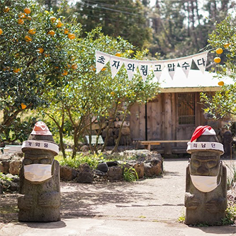
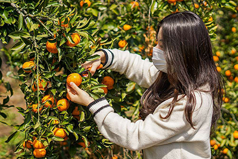
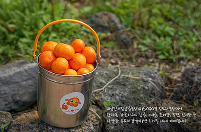
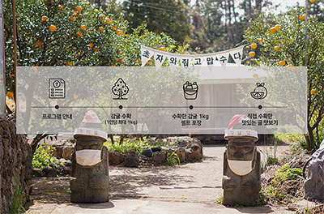

365일 가능한 감귤따기 체험과 농촌생태체험

*기획전 할인 기간은 10월까지이며, 진행 상황에 따라 조기 종료될 수 있습니다.
예약하러 가기최남단체험감귤농장은 연중 무휴로 한라봉, 청견, 세미놀 또는 카라향 1kg 따기 체험을 제공하고 있습니다.
제주도의 귤을 직접 수확하는 체험을 통해 제주의 자연과 교감을 나누며 힐링을 얻어가시길 바랍니다.

감귤품종 다양화를 이룬 총면적 2만평 부지의 감귤농장에서 1년 365일 언제든 제철 제주 감귤을 딸 수 있습니다.
우천시에도 비가림하우스에서 수확이 가능하며, 최남단의 감귤은 당도가 높아 그 맛도 으뜸입니다. (4~6월 : 한라봉, 청견, 세미놀, 키라향 수확 가능)


* 한 사람 당 1kg까지 수확 가능